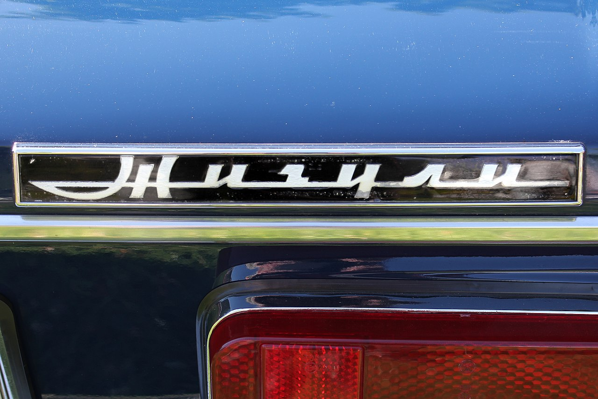

Жигули

Жигули или LADA Classic (1970—2014) — линейка легковых автомобилей малого класса Волжского автомобильного завода. Самое массовое семейство автомобилей в истории СССР и России, выпущенное за период производства в количестве 17,6 млн машин (включая автомобили, собранные из вазовских машинокомплектов за рубежом).
Модели
Всего было выпущено семь моделей «Жигулей» с индексами от 2101 до 2107. Индекс каждой модели мог содержать пятую цифру, указывающую на модификацию автомобиля: так, например, ВАЗ-21059 — версия «пятой модели» с роторно-поршневым двигателем.
Серийные и массовые модели
- ВАЗ-2101 (1970—1988) — самая первая модель, получившая народное название «копейка».
- ВАЗ-2102 (1971—1986) — версия модели 2101 с кузовом универсал.
- ВАЗ-2103 (1972—1984) — модель с улучшенной комплектацией, отличавшаяся сдвоенными фарами и обилием хрома в отделке, на момент дебюта стала флагманом модельного ряда.
- ВАЗ-2104 (1984—2012) — универсал на базе 2105, самая поздняя модель в гамме, известна на экспортных рынках как Kalinka и Signet.
- ВАЗ-2105 (1980—2010) — первая модель с прямоугольными фарами, экстерьером и интерьером нового дизайна, известна на экспортных рынках как Riva, Nova, Laika и Clasico.
- ВАЗ-2106 (1976—2006) — усовершенствованная версия модели 2103, с меньшим числом хромированных деталей в отделке, на момент дебюта стала флагманом модельного ряда.
- ВАЗ-2107 (1982—2012) — люксовая версия «пятёрки», известная на экспортных рынках как Riva, Nova и Signet, на момент дебюта стала флагманом модельного ряда.